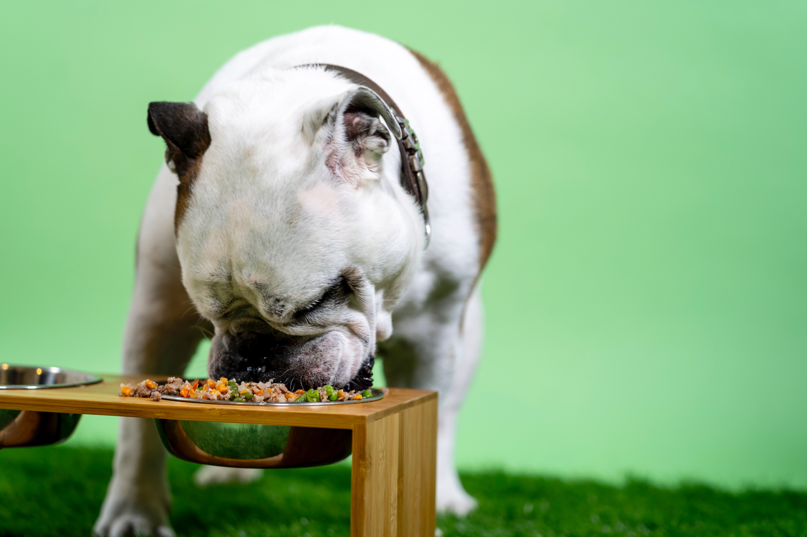

매우 강한 사회성을 보이는 동물이며 강아지는 어미나 자신들끼리 노는 데 대부분의 시간을 보낸다. 사람과의 사회적 관계를 맺는 것은 8주에서 12주 무렵부터 이루어지며 점차 사람과 상호 반응하는 사회적 기술을 익히게 된다. 이 시기에 사람이나 성체 개로부터 위협을 겪으면 정서적으로 크게 위축될 수 있다. 여러 강아지들은 주인에 대한 충성심이 매우 강하다.
강아지의 연령에 따라 식사의 양과 횟수를 조절해야 한다. 젖을때고 약 5개월 까지는 아침7시 오전12시 저녁5시 오후10시 간격으로 4-5시간의 시차를 두어 하루 4-6회의 먹이를 주고 생후 6개월에서 10개월에는 아침/점심/저녁으로 하루 3회 먹이를 주어야 한다. 생후 10개월부터-1년까지는 아침과저녁, 하루 2회의 먹이를 주고 1년이 지난 성견은 하루에 1,2회면 된다.
